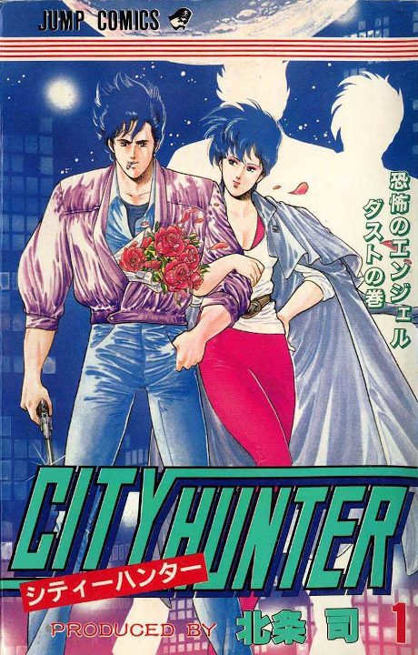

City Hunter
シティーハンター
Ryo Saeba is a top private sweeper in Tokyo who takes dangerous jobs, especially from pretty women, while his partner Kaori keeps his flirting in check with a giant hammer.
After the anime, read the manga from Chapter 169.
7.6AniList score
—Animeter, no votes yet
140episodes, 4 seasons
Rate it or report where you stopped
Anime finished. Where does the manga pick up?
Start at Chapter169
After City Hunter '91, resume at volume 31, chapter 169; the anime skips chapters and adds filler, and Angel Dust (2023) loosely covers the final arc.
162115115168336 end
City HunterCity Hunter 2City Hunter 3City Hunter '91Start reading here
More like City Hunter
 Original8.1
Original8.1
 Own end8.0
Own end8.0
 Manga Ch. 747.6
Manga Ch. 747.6
 Unclear7.6
Unclear7.6
 Manga Ch. 1357.8
Manga Ch. 1357.8
 Original8.5
Original8.5
 Original7.4
Original7.4
 Unclear7.1
Unclear7.1
 Manga Ch. 777.8
Manga Ch. 777.8
 Unclear7.1
Unclear7.1
 Done7.7
Done7.7
 Done8.8
Done8.8